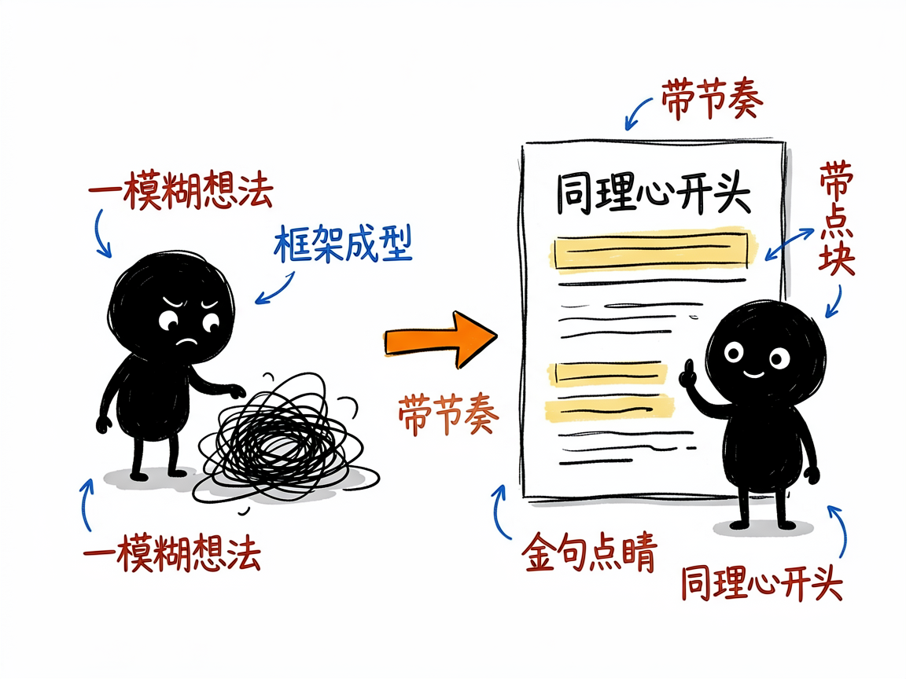
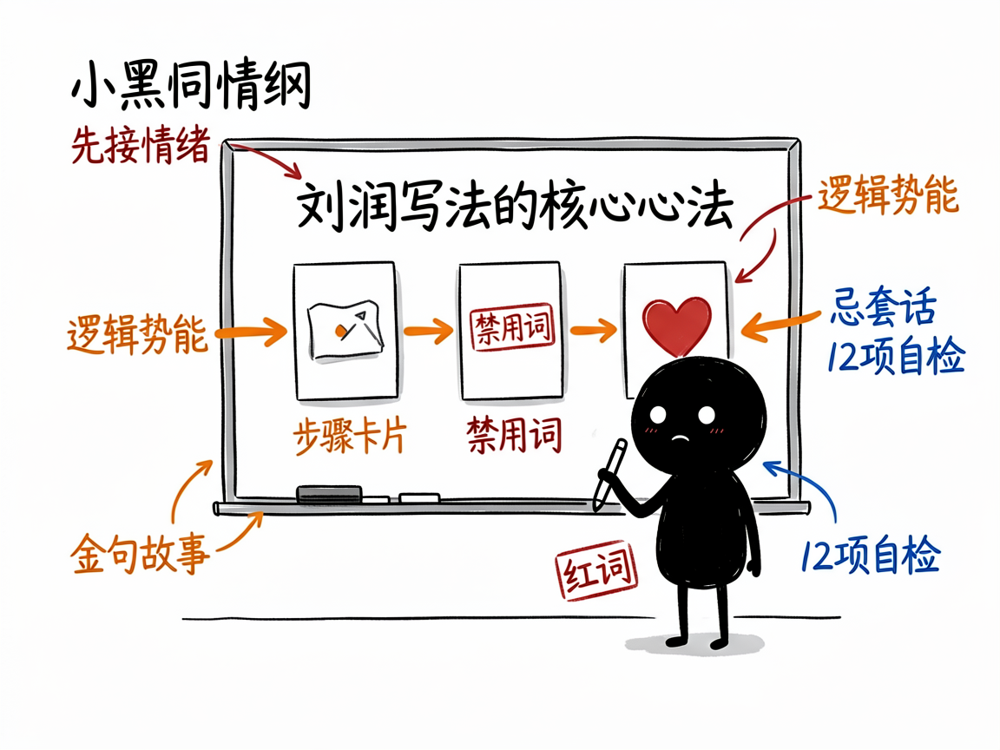

想写出"刘润式"有洞察的商业长文？让这个助手替你搭好骨架 —— liurun-bookwriter 介绍
你是不是也遇到过这种情况：脑子里有个商业观点想写下来，可一打开文档就卡住——开头怎么抓人？结构怎么排？金句从哪来？最后写出来的东西要么像流水账，要么满篇"赋能""底层逻辑"这种自己也别扭的词。
liurun-bookwriter 就是来解决这件事的。
你给它一个商业选题，它还你一篇有同理心、有逻辑势能、带金句的商业长文，而且通篇是刘润那股"替读者着想"的味儿。它把刘润 28 年商业写作经验（来自《我这28年的写作心法》《5分钟商学院》）提炼成一套可直接用的框架，不是简单套模板，而是真把"怎么写"教给 AI。

它到底能做什么
- 用三种成稿结构帮你写：最简单的3段式（适合商业评论、方法论）、珍珠项链般的10点式（适合案例拆解、企业参访）、克制的32条（适合事件评论、热点回应）。
- 自动套用 SCQA 逻辑势能。说人话就是：它先想清楚"先抛答案还是先抛冲突"，让文章有节奏地往下冲，而不是平铺直叙。
- 每篇都塞进"金句、故事、比方"这类内容块（它管这叫 callout），让文章有记忆点，不是干巴巴讲道理。
- 帮你把用词拿捏到位：短、准、改。它会主动避开"大家""赋能""综上所述"这些刘润自己都嫌弃的词。
- 带着"同理心"开头——想象读者此刻正在地铁上、在午休、在深夜焦虑，先接住对方的情绪再开讲。
- 写完后做 12 项质量自检（禁用词、句长、人称频率等），不合格会标出来。
一个具体例子
最省事的方式是直接对 AI 说一句话：
用刘润的风格写一篇关于鸿蒙的 32 条评论
AI 会自动：识别结构→选定逻辑势能→调研素材→按心法撰写→做质量自检→每写完一条停下来等你确认。
如果你想用命令行核对结构，项目里附了脚本：
# 验证一篇长文是否符合 3段式/10点式/32条 的规范（12 项检查）
python scripts/validate_structure.py article.md

谁适合用
- 公众号作者、商业自媒体，想稳定产出有质感的商业评论。
- 企业市场/品牌人员，要写方法论文章、案例拆解、企业家专访。
- 知识博主，想把"观点"讲出结构和说服力。
- 做 AI 写作工具的人，把它当成一个高质量"风格框架"来复用。
一点说明 / 小提示
它最擅长的是有商业洞察的长文，但边界也清楚：写不了学术论文、纯小说、朋友圈那种超短文案，也做不了需要复杂图表的财务报告。它帮你把"写法"做到位，但替不了你自己的商业思考和真实调研——涉及数据、案例时它要求标注来源和时效。另外，这个项目是给"会调 AI Agent 的人"用的 skill（放在 skills 目录里由 AI 自动加载），不是普通人双击打开的 App；具体能调到什么程度，以项目里的 SKILL.md / README.md 为准。